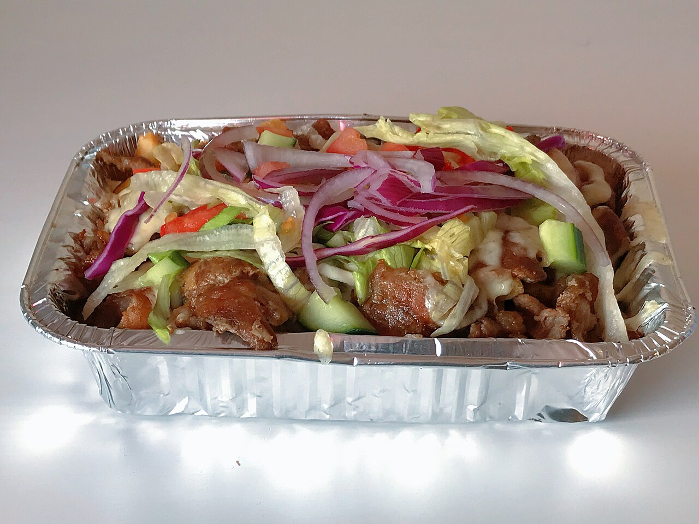

kapsalon

Description
The Kapsalon is a legendary Dutch street food dish that originated in Rotterdam. It was reportedly created when a local hairdresser (hence the name "Kapsalon," which is Dutch for "hairdressing salon") asked his neighborhood shawarma shop to combine all his favorite ingredients into one metal take-out tray.
It consists of a layer of crispy French fries topped with savory shawarma meat and melted Gouda cheese. Once baked, it is finished with a pile of fresh salad and a generous drizzle of garlic sauce and spicy sambal. It is the perfect indulgent meal for when you need something hearty and satisfying.
Ingredients
- Frozen or fresh French fries
- 300g Chicken or Lamb Shawarma (seasoned)
- 4 slices of Gouda cheese
- Shredded iceberg lettuce
- Sliced cucumber and cherry tomatoes
- Garlic sauce
- Sambal (hot chili paste)
Steps
- Fry the Potatoes: Cook the French fries in a deep fryer or oven until they are golden brown and extra crispy.
- Cook the Meat: While the fries are cooking, sauté the shawarma meat in a pan over medium-high heat until fully cooked and slightly browned.
- Layer and Melt: Place the cooked fries in an oven-safe dish. Layer the meat over the fries, then cover the top with slices of Gouda cheese.
- Broil: Place the dish under a broiler (grill) for 2-3 minutes until the cheese is melted and bubbling.
- Top with Salad: Remove from the oven and pile the shredded lettuce, cucumber, and tomatoes on top of the melted cheese.
- Sauce it up: Drizzle plenty of garlic sauce and as much sambal as you can handle over the top. Serve immediately while hot!
Home